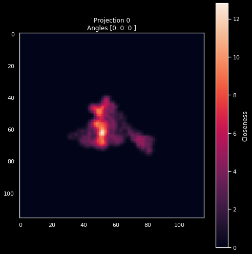
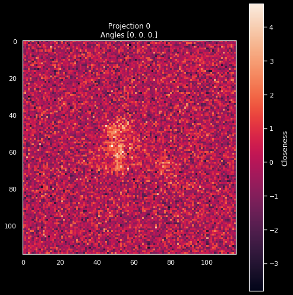
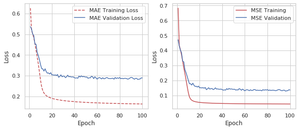

Learning the Distance Function¶
ROOT_DIR = "../.."
from numba import cuda
cuda.select_device(0)
cuda.close()
import os
import h5py
import numpy as np
import matplotlib.pyplot as plt
import sys
sys.path.append(ROOT_DIR)
from tensorflow.keras.utils import plot_model
from cryoem.conversions import euler2quaternion, d_q
from cryoem.angle_recovery import train_angle_recovery
from cryoem.plots import plot_projection, plot_dP_dQ
from cryoem.helpers import train_val_test_split, projections_preprocessing
from cryoem.angle_alignment import training_angle_alignment, update_quaternion
from tensorflow.keras.optimizers import Adagrad, Ftrl
import tensorflow as tf
from tensorflow.python.client import device_lib
print(device_lib.list_local_devices())
[name: "/device:CPU:0"
device_type: "CPU"
memory_limit: 268435456
locality {
}
incarnation: 8112100349620938180
, name: "/device:GPU:0"
device_type: "GPU"
memory_limit: 11131505856
locality {
bus_id: 1
links {
}
}
incarnation: 16767327830705956983
physical_device_desc: "device: 0, name: Tesla K40c, pci bus id: 0000:3b:00.0, compute capability: 3.5"
]
Read data¶
# full sphere coverage
projections_filename = "../../data/5j0n_full_uniformS2.h5"
# load structures
data_full_5k = h5py.File(projections_filename, 'r')
angles_true = np.array(data_full_5k['Angles'], dtype=np.float32)
projections = np.array(data_full_5k['Projections'], dtype=np.float32)
label = "Full-coverage, Euler uniform"
print(f"{angles_true.shape[0]} projections of images with dimension {projections.shape[1:]} pixels")
print(f"{angles_true.shape[0]} sets of {angles_true.shape[1]} ground truth angles of corresponding projection images")
5000 projections of images with dimension (116, 116) pixels
5000 sets of 3 ground truth angles of corresponding projection images
train_idx, val_idx, test_idx = train_val_test_split(indices=range(len(projections)), file_name="../../data/indices.npz")
pid = 0
plot_projection(projections[pid], f'Projection {pid}\nAngles {angles_true[pid]}')

settings = dict(
noise={"variance":16.0},
shift={"left_limit":-0.01,
"peak_limit":0,
"right_limit":0.01},
channels="gray"
)
X, y = projections_preprocessing(projections, angles_true, settings=settings)
Image shape: (116, 116)
Data Type: float32
***
Mean: 0.262 | Std: 4.128
Min: -23.085 | Max: 26.780
Mean: 0.000 | Std: 1.000
Min: -5.655 | Max: 6.424
pid = 0
plot_projection(X[pid].squeeze(), f'Projection {pid}\nAngles {y[pid]}')

Distance Learning¶
train_percent = 0.01
val_percent = 0.01
int(train_percent*np.power(len(train_idx), 2)), int(val_percent*np.power(len(val_idx), 2))
(63101, 7022)
model, history1 = train_siamese(X=X, y=y,
train_idx=train_idx,
val_idx=val_idx,
epochs=100,
batch_size=256,
learning_rate=1e-3,
limit_style="random",
path_logs_training="../../data",
training_description="model",
training_steps=int(train_percent*np.power(len(train_idx), 2)),
validation_steps=int(val_percent*np.power(len(val_idx), 2)),
plot=True,
gpus=None)
INFO:tensorflow:Using MirroredStrategy with devices ('/job:localhost/replica:0/task:0/device:GPU:0',)
Data created in 7.587054491043091 sec
Data created in 0.8231291770935059 sec
Input images shape (116, 116, 1)
Model: "model_7"
__________________________________________________________________________________________________
Layer (type) Output Shape Param # Connected to
==================================================================================================
input_10 (InputLayer) [(None, 116, 116, 1) 0
__________________________________________________________________________________________________
input_11 (InputLayer) [(None, 116, 116, 1) 0
__________________________________________________________________________________________________
model_6 (Functional) (None, 512) 4551936 input_10[0][0]
input_11[0][0]
__________________________________________________________________________________________________
lambda_3 (Lambda) (None, 1) 0 model_6[0][0]
model_6[1][0]
==================================================================================================
Total params: 4,551,936
Trainable params: 4,551,936
Non-trainable params: 0
__________________________________________________________________________________________________
('Failed to import pydot. You must `pip install pydot` and install graphviz (https://graphviz.gitlab.io/download/), ', 'for `pydotprint` to work.')
WARNING:tensorflow:`period` argument is deprecated. Please use `save_freq` to specify the frequency in number of batches seen.
Model will be saved to: ../../data/training/model.h5
Epoch 1/100
247/247 [==============================] - 157s 623ms/step - loss: 0.8150 - mse: 1.1698 - val_loss: 0.5368 - val_mse: 0.4717
Epoch 2/100
247/247 [==============================] - 150s 609ms/step - loss: 0.5220 - mse: 0.4419 - val_loss: 0.5259 - val_mse: 0.4308
Epoch 3/100
247/247 [==============================] - 150s 606ms/step - loss: 0.5070 - mse: 0.4137 - val_loss: 0.5016 - val_mse: 0.4025
Epoch 4/100
247/247 [==============================] - 150s 607ms/step - loss: 0.4871 - mse: 0.3799 - val_loss: 0.4939 - val_mse: 0.3856
Epoch 5/100
247/247 [==============================] - 150s 608ms/step - loss: 0.4607 - mse: 0.3388 - val_loss: 0.4531 - val_mse: 0.3288
Epoch 6/100
247/247 [==============================] - 150s 607ms/step - loss: 0.4288 - mse: 0.2916 - val_loss: 0.4522 - val_mse: 0.3249
Epoch 7/100
247/247 [==============================] - 150s 606ms/step - loss: 0.3959 - mse: 0.2518 - val_loss: 0.4127 - val_mse: 0.2723
Epoch 8/100
247/247 [==============================] - 150s 607ms/step - loss: 0.3652 - mse: 0.2154 - val_loss: 0.3973 - val_mse: 0.2521
Epoch 9/100
247/247 [==============================] - 151s 612ms/step - loss: 0.3237 - mse: 0.1680 - val_loss: 0.3771 - val_mse: 0.2280
Epoch 10/100
247/247 [==============================] - 150s 607ms/step - loss: 0.2829 - mse: 0.1262 - val_loss: 0.3528 - val_mse: 0.2015
Epoch 11/100
247/247 [==============================] - 151s 610ms/step - loss: 0.2477 - mse: 0.0933 - val_loss: 0.3337 - val_mse: 0.1783
Epoch 12/100
247/247 [==============================] - 150s 609ms/step - loss: 0.2267 - mse: 0.0768 - val_loss: 0.3329 - val_mse: 0.1787
Epoch 13/100
247/247 [==============================] - 149s 605ms/step - loss: 0.2151 - mse: 0.0686 - val_loss: 0.3220 - val_mse: 0.1695
Epoch 14/100
247/247 [==============================] - 149s 604ms/step - loss: 0.2069 - mse: 0.0634 - val_loss: 0.3332 - val_mse: 0.1823
Epoch 15/100
247/247 [==============================] - 150s 608ms/step - loss: 0.2031 - mse: 0.0610 - val_loss: 0.3197 - val_mse: 0.1683
Epoch 16/100
247/247 [==============================] - 149s 604ms/step - loss: 0.1983 - mse: 0.0584 - val_loss: 0.3121 - val_mse: 0.1606
Epoch 17/100
247/247 [==============================] - 150s 608ms/step - loss: 0.1928 - mse: 0.0557 - val_loss: 0.3134 - val_mse: 0.1618
Epoch 18/100
247/247 [==============================] - 150s 607ms/step - loss: 0.1912 - mse: 0.0547 - val_loss: 0.3080 - val_mse: 0.1563
Epoch 19/100
247/247 [==============================] - 149s 604ms/step - loss: 0.1903 - mse: 0.0541 - val_loss: 0.3144 - val_mse: 0.1628
Epoch 20/100
247/247 [==============================] - 150s 606ms/step - loss: 0.1882 - mse: 0.0531 - val_loss: 0.3035 - val_mse: 0.1513
Epoch 21/100
247/247 [==============================] - 149s 605ms/step - loss: 0.1860 - mse: 0.0521 - val_loss: 0.3041 - val_mse: 0.1522
Epoch 22/100
247/247 [==============================] - 150s 605ms/step - loss: 0.1855 - mse: 0.0518 - val_loss: 0.3023 - val_mse: 0.1502
Epoch 23/100
247/247 [==============================] - 149s 605ms/step - loss: 0.1831 - mse: 0.0506 - val_loss: 0.3040 - val_mse: 0.1525
Epoch 24/100
247/247 [==============================] - 149s 604ms/step - loss: 0.1823 - mse: 0.0502 - val_loss: 0.3004 - val_mse: 0.1485
Epoch 25/100
247/247 [==============================] - 149s 604ms/step - loss: 0.1802 - mse: 0.0493 - val_loss: 0.3057 - val_mse: 0.1535
Epoch 26/100
247/247 [==============================] - 150s 607ms/step - loss: 0.1806 - mse: 0.0492 - val_loss: 0.2922 - val_mse: 0.1389
Epoch 27/100
247/247 [==============================] - 149s 604ms/step - loss: 0.1793 - mse: 0.0488 - val_loss: 0.2961 - val_mse: 0.1444
Epoch 28/100
247/247 [==============================] - 150s 606ms/step - loss: 0.1784 - mse: 0.0484 - val_loss: 0.3040 - val_mse: 0.1519
Epoch 29/100
247/247 [==============================] - 151s 610ms/step - loss: 0.1776 - mse: 0.0482 - val_loss: 0.2947 - val_mse: 0.1427
Epoch 30/100
247/247 [==============================] - 150s 606ms/step - loss: 0.1772 - mse: 0.0478 - val_loss: 0.2981 - val_mse: 0.1455
Epoch 31/100
247/247 [==============================] - 150s 607ms/step - loss: 0.1761 - mse: 0.0474 - val_loss: 0.2973 - val_mse: 0.1466
Epoch 32/100
247/247 [==============================] - 149s 605ms/step - loss: 0.1763 - mse: 0.0477 - val_loss: 0.2903 - val_mse: 0.1395
Epoch 33/100
247/247 [==============================] - 150s 606ms/step - loss: 0.1741 - mse: 0.0467 - val_loss: 0.2944 - val_mse: 0.1431
Epoch 34/100
247/247 [==============================] - 150s 608ms/step - loss: 0.1745 - mse: 0.0468 - val_loss: 0.3025 - val_mse: 0.1512
Epoch 35/100
247/247 [==============================] - 151s 609ms/step - loss: 0.1738 - mse: 0.0466 - val_loss: 0.2946 - val_mse: 0.1428
Epoch 36/100
247/247 [==============================] - 150s 606ms/step - loss: 0.1741 - mse: 0.0465 - val_loss: 0.2960 - val_mse: 0.1442
Epoch 37/100
247/247 [==============================] - 150s 608ms/step - loss: 0.1730 - mse: 0.0463 - val_loss: 0.2937 - val_mse: 0.1419
Epoch 38/100
247/247 [==============================] - 150s 607ms/step - loss: 0.1728 - mse: 0.0461 - val_loss: 0.2939 - val_mse: 0.1419
Epoch 39/100
247/247 [==============================] - 150s 607ms/step - loss: 0.1717 - mse: 0.0459 - val_loss: 0.2938 - val_mse: 0.1429
Epoch 40/100
247/247 [==============================] - 150s 608ms/step - loss: 0.1711 - mse: 0.0453 - val_loss: 0.2897 - val_mse: 0.1391
Epoch 41/100
247/247 [==============================] - 150s 608ms/step - loss: 0.1710 - mse: 0.0455 - val_loss: 0.2884 - val_mse: 0.1357
Epoch 42/100
247/247 [==============================] - 150s 606ms/step - loss: 0.1708 - mse: 0.0455 - val_loss: 0.2897 - val_mse: 0.1375
Epoch 43/100
247/247 [==============================] - 150s 608ms/step - loss: 0.1704 - mse: 0.0452 - val_loss: 0.2875 - val_mse: 0.1360
Epoch 44/100
247/247 [==============================] - 151s 610ms/step - loss: 0.1701 - mse: 0.0452 - val_loss: 0.2984 - val_mse: 0.1457
Epoch 45/100
247/247 [==============================] - 150s 605ms/step - loss: 0.1710 - mse: 0.0455 - val_loss: 0.2932 - val_mse: 0.1397
Epoch 46/100
247/247 [==============================] - 150s 607ms/step - loss: 0.1696 - mse: 0.0450 - val_loss: 0.2992 - val_mse: 0.1471
Epoch 47/100
247/247 [==============================] - 151s 610ms/step - loss: 0.1688 - mse: 0.0448 - val_loss: 0.2946 - val_mse: 0.1426
Epoch 48/100
247/247 [==============================] - 150s 608ms/step - loss: 0.1686 - mse: 0.0447 - val_loss: 0.2960 - val_mse: 0.1440
Epoch 49/100
247/247 [==============================] - 150s 608ms/step - loss: 0.1688 - mse: 0.0448 - val_loss: 0.2944 - val_mse: 0.1420
Epoch 50/100
247/247 [==============================] - 150s 606ms/step - loss: 0.1692 - mse: 0.0447 - val_loss: 0.2932 - val_mse: 0.1409
Epoch 51/100
247/247 [==============================] - 149s 603ms/step - loss: 0.1694 - mse: 0.0451 - val_loss: 0.2935 - val_mse: 0.1418
Epoch 52/100
247/247 [==============================] - 150s 607ms/step - loss: 0.1660 - mse: 0.0437 - val_loss: 0.2872 - val_mse: 0.1361
Epoch 53/100
247/247 [==============================] - 150s 606ms/step - loss: 0.1678 - mse: 0.0445 - val_loss: 0.2899 - val_mse: 0.1380
Epoch 54/100
247/247 [==============================] - 150s 607ms/step - loss: 0.1668 - mse: 0.0441 - val_loss: 0.2893 - val_mse: 0.1367
Epoch 55/100
247/247 [==============================] - 150s 607ms/step - loss: 0.1669 - mse: 0.0440 - val_loss: 0.2970 - val_mse: 0.1456
Epoch 56/100
247/247 [==============================] - 149s 604ms/step - loss: 0.1673 - mse: 0.0443 - val_loss: 0.2949 - val_mse: 0.1421
Epoch 57/100
247/247 [==============================] - 150s 608ms/step - loss: 0.1664 - mse: 0.0440 - val_loss: 0.2856 - val_mse: 0.1348
Epoch 58/100
247/247 [==============================] - 149s 605ms/step - loss: 0.1669 - mse: 0.0440 - val_loss: 0.2946 - val_mse: 0.1426
Epoch 59/100
247/247 [==============================] - 150s 608ms/step - loss: 0.1664 - mse: 0.0438 - val_loss: 0.2892 - val_mse: 0.1371
Epoch 60/100
247/247 [==============================] - 150s 608ms/step - loss: 0.1657 - mse: 0.0438 - val_loss: 0.2833 - val_mse: 0.1314
Epoch 61/100
247/247 [==============================] - 150s 607ms/step - loss: 0.1656 - mse: 0.0437 - val_loss: 0.2883 - val_mse: 0.1368
Epoch 62/100
247/247 [==============================] - 149s 605ms/step - loss: 0.1658 - mse: 0.0437 - val_loss: 0.2908 - val_mse: 0.1386
Epoch 63/100
247/247 [==============================] - 150s 607ms/step - loss: 0.1665 - mse: 0.0440 - val_loss: 0.2883 - val_mse: 0.1363
Epoch 64/100
247/247 [==============================] - 150s 606ms/step - loss: 0.1655 - mse: 0.0437 - val_loss: 0.2843 - val_mse: 0.1322
Epoch 65/100
247/247 [==============================] - 150s 607ms/step - loss: 0.1654 - mse: 0.0435 - val_loss: 0.2899 - val_mse: 0.1379
Epoch 66/100
247/247 [==============================] - 149s 604ms/step - loss: 0.1650 - mse: 0.0433 - val_loss: 0.2849 - val_mse: 0.1334
Epoch 67/100
247/247 [==============================] - 150s 608ms/step - loss: 0.1649 - mse: 0.0435 - val_loss: 0.2859 - val_mse: 0.1342
Epoch 68/100
247/247 [==============================] - 149s 604ms/step - loss: 0.1642 - mse: 0.0432 - val_loss: 0.2899 - val_mse: 0.1396
Epoch 69/100
247/247 [==============================] - 150s 608ms/step - loss: 0.1644 - mse: 0.0434 - val_loss: 0.2905 - val_mse: 0.1394
Epoch 70/100
247/247 [==============================] - 150s 606ms/step - loss: 0.1637 - mse: 0.0431 - val_loss: 0.2863 - val_mse: 0.1341
Epoch 71/100
247/247 [==============================] - 150s 606ms/step - loss: 0.1639 - mse: 0.0433 - val_loss: 0.2862 - val_mse: 0.1357
Epoch 72/100
247/247 [==============================] - 150s 605ms/step - loss: 0.1635 - mse: 0.0428 - val_loss: 0.2858 - val_mse: 0.1340
Epoch 73/100
247/247 [==============================] - 150s 606ms/step - loss: 0.1636 - mse: 0.0431 - val_loss: 0.2869 - val_mse: 0.1343
Epoch 74/100
247/247 [==============================] - 149s 604ms/step - loss: 0.1632 - mse: 0.0430 - val_loss: 0.2874 - val_mse: 0.1348
Epoch 75/100
247/247 [==============================] - 149s 603ms/step - loss: 0.1622 - mse: 0.0426 - val_loss: 0.2831 - val_mse: 0.1312
Epoch 76/100
247/247 [==============================] - 150s 607ms/step - loss: 0.1630 - mse: 0.0429 - val_loss: 0.2912 - val_mse: 0.1389
Epoch 77/100
247/247 [==============================] - 150s 607ms/step - loss: 0.1641 - mse: 0.0433 - val_loss: 0.2861 - val_mse: 0.1352
Epoch 78/100
247/247 [==============================] - 149s 603ms/step - loss: 0.1616 - mse: 0.0424 - val_loss: 0.2897 - val_mse: 0.1383
Epoch 79/100
247/247 [==============================] - 150s 605ms/step - loss: 0.1627 - mse: 0.0428 - val_loss: 0.2868 - val_mse: 0.1360
Epoch 80/100
247/247 [==============================] - 149s 603ms/step - loss: 0.1619 - mse: 0.0426 - val_loss: 0.2910 - val_mse: 0.1391
Epoch 81/100
247/247 [==============================] - 150s 608ms/step - loss: 0.1625 - mse: 0.0428 - val_loss: 0.2852 - val_mse: 0.1334
Epoch 82/100
247/247 [==============================] - 150s 607ms/step - loss: 0.1614 - mse: 0.0424 - val_loss: 0.2874 - val_mse: 0.1366
Epoch 83/100
247/247 [==============================] - 149s 603ms/step - loss: 0.1634 - mse: 0.0432 - val_loss: 0.2853 - val_mse: 0.1335
Epoch 84/100
247/247 [==============================] - 150s 608ms/step - loss: 0.1628 - mse: 0.0431 - val_loss: 0.2867 - val_mse: 0.1348
Epoch 85/100
247/247 [==============================] - 150s 606ms/step - loss: 0.1618 - mse: 0.0426 - val_loss: 0.2872 - val_mse: 0.1354
Epoch 86/100
247/247 [==============================] - 149s 603ms/step - loss: 0.1627 - mse: 0.0429 - val_loss: 0.2861 - val_mse: 0.1343
Epoch 87/100
247/247 [==============================] - 150s 607ms/step - loss: 0.1619 - mse: 0.0425 - val_loss: 0.2834 - val_mse: 0.1324
Epoch 88/100
247/247 [==============================] - 149s 605ms/step - loss: 0.1624 - mse: 0.0430 - val_loss: 0.2844 - val_mse: 0.1332
Epoch 89/100
247/247 [==============================] - 150s 606ms/step - loss: 0.1610 - mse: 0.0424 - val_loss: 0.2885 - val_mse: 0.1368
Epoch 90/100
247/247 [==============================] - 149s 603ms/step - loss: 0.1613 - mse: 0.0425 - val_loss: 0.2915 - val_mse: 0.1396
Epoch 91/100
210/247 [========================>.....] - ETA: 21s - loss: 0.1615 - mse: 0.0426
data = np.load("../../data/losses/model.npz")
training_loss, val_loss, mses, val_mses = data['arr_0'], data['arr_1'], data['arr_2'], data['arr_3']
sns.set_style("whitegrid", {'axes.grid' : True})
# Get training and test loss histories
fig, (ax1, ax2) = plt.subplots(1, 2, figsize=(10,4))
# Create count of the number of epochs
epoch_count = range(1, len(training_loss) + 1)
# Visualize loss history
ax1.plot(epoch_count, training_loss, 'r--', label='MAE Training Loss')
ax1.plot(epoch_count, val_loss, 'b-', label='MAE Validation Loss')
ax1.legend()
ax1.set_xlabel('Epoch')
ax1.set_ylabel('Loss')
ax2.plot(epoch_count, mses, 'r-', label='MSE Training')
ax2.plot(epoch_count, val_mses, 'b-', label='MSE Validation')
ax2.legend()
ax2.set_xlabel('Epoch')
ax2.set_ylabel('Loss')
plt.show();

model.save_weights(f"../../data/training/model_weights.h5")
Read Model Checkpoint¶
# put correct filename
model_filename = f"../../data/training/model.h5"
# Recreate the exact same model, including its weights and the optimizer
model = tf.keras.models.load_model(model_filename)
# Show the model architecture
model.summary()
Model: "model_7"
__________________________________________________________________________________________________
Layer (type) Output Shape Param # Connected to
==================================================================================================
input_10 (InputLayer) [(None, 116, 116, 1) 0
__________________________________________________________________________________________________
input_11 (InputLayer) [(None, 116, 116, 1) 0
__________________________________________________________________________________________________
model_6 (Functional) (None, 512) 4551936 input_10[0][0]
input_11[0][0]
__________________________________________________________________________________________________
lambda_3 (Lambda) (None, 1) 0 model_6[0][0]
model_6[1][0]
==================================================================================================
Total params: 4,551,936
Trainable params: 4,551,936
Non-trainable params: 0
__________________________________________________________________________________________________
plot_model(model, to_file=f"../../data/model_plot.png", expand_nested=True, show_shapes=True, show_layer_names=True)
('Failed to import pydot. You must `pip install pydot` and install graphviz (https://graphviz.gitlab.io/download/), ', 'for `pydotprint` to work.')
Performance Plot - True vs. Predicted¶
def d_p(p1, p2):
p1 = tf.cast(p1, dtype=tf.float32)
p2 = tf.cast(p2, dtype=tf.float32)
return model.predict([p1, p2], batch_size=256)
idx1 = list(np.random.choice(test_idx, size=5000))
idx2 = list(np.random.choice(test_idx, size=5000))
q1_true = euler2quaternion([angles_true[i] for i in idx1])
q2_true = euler2quaternion([angles_true[i] for i in idx2])
p1 = [X[i] for i in idx1]
p2 = [X[i] for i in idx2]
dP_values = d_p(p1, p2).T[0]
dQ_values = d_q(q1_true, q2_true).numpy()
plot_dP_dQ(dP_values, dQ_values)
<Figure size 432x288 with 0 Axes>
<Figure size 432x288 with 0 Axes>
Variance = 0.3650154143785532
Min. angle recovery loss possible = 0.13320960548340013
MAE: 0.28325868